Basic Editing
Skip To Table Of Contents
Back To Basic Concepts
Back To Homepage
How to Enable Editing
In order to start editing, you first have to select which layer you will be editing. To do this you simply have to click on the layer's name in the layer list and then turn editing on for that layer. In the example below the training_main_polygon layer is selected, we can see that by it being underlined.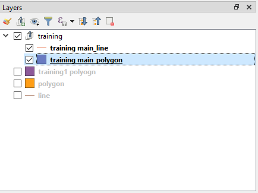 After selecting the layer you want to edit click on the Toggle editing... button 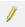 which is located on the Digitizing toolbar over here.
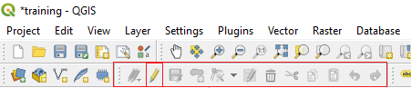 If you can't find the Digitizing toolbar you will have to turn it on by right-clicking an empty area of the top toolbars and selecting it from the list.

Now Lets Get To Know The Editing Tools We Have
Back To Basic ConceptsBack To Homepage
- Basic Editing
- Selecting Features Manually
- Creating Features
2.1 Disable The Popup Form - Editing Vertices
- Copy, Paste And Delete
- Advanced Editing Tools
Selecting Features Manually
If you want to select features in a layer manually, meaning wither by selecting them within an area,
or by a location you do not wish to describe by expression, you can perform a manual selection.
You first have to choose which selection method you wish to use, this can done by clicking the little arrow to the right of the selction button:
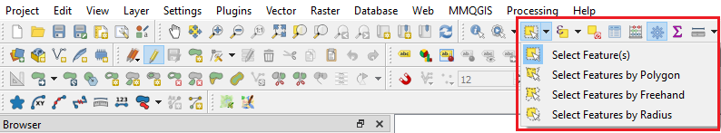
The default option is to select by clicking or by dragging the mouse and creating a square\rectangle.
Once the tool has been selected all you have to do is click the features you want to select or drag a rectangle around them.
Other options let you create more precise selections, such as by Freehand,
Polygon which requires you to create by adding vertices (points) until you have your wanted polygon and then right-click, or by click and drag Radius.
Go back to the table of contents
Creating Features
Points
Assuming you already toggled editing on the point layer you want create features in.
click the Add Point Feature 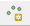 button or use the keyboard shortcut Ctrl+.(thats point, not comma).
Now all you have to do is simply add the feature where it should be placed.
once the point is added you will have to enter the attributes data, in the form that popped up.
In the example below i only have two fields, an autogenerated id field and a description.
if you don't want to enter all the attributes you can simply close the window by clicking the OK button.
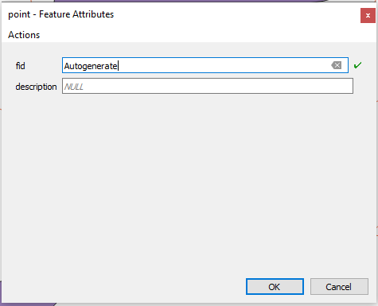
To make sure your edits are saved click the Save Layer Edits 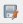 button and toggle editing off.
And thats it, creating point data with open source tools.
Lines
Assuming you already toggled editing on the polyline layer you want create features in.
click the Add Line Feature 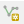 button or use the keyboard shortcut Ctrl+.(thats point, not comma).
To start a new line feature click on where you want it to start on the map,
when you finish digitizing your line, right-click to open the attributes form.
if you don't want to enter all the attributes you can simply close the window by clicking the OK button.
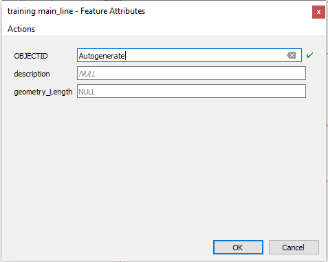
To make sure your edits are saved click the Save Layer Edits button and toggle editing off.
And thats it, creating Polyline data with open source tools.
Polygons
Assuming you already toggled editing on the polygon layer you want create features in.
click the Add Polygon Feature 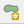 button or use the keyboard shortcut Ctrl+.(thats point, not comma).
To start a new polygon feature click on where you want it to start on the map,
when you finish digitizing your line, right-click to open the attributes form.
if you don't want to enter all the attributes you can simply close the window by clicking the OK button.
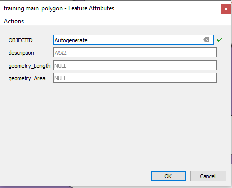
If you have self calculated fields (for example the shapes' length or area) they will be filled out after you close the form.
To make sure your edits are saved click the Save Layer Edits button and toggle editing off.
And thats it, creating Polyline data with open source tools.
Is The Popup Form Annoying You?
Then you can turn it off.
open Settings -> Options and go to the Digitizing tab.
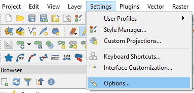
Here you can simply tick ☑ Suppress attributes pop-up windows after each created feature to avoid the form opening.
Another usefull option is ☑ Reuse last entered attribute values to have fields automatically filled at the opening of the form and just have to type changing values.
 You are welcome to explore the other digitizing options here, which let you control the digitizing exprience in QGIS.
You are welcome to explore the other digitizing options here, which let you control the digitizing exprience in QGIS.
Editing Vertices
Editing vertices is simmiliar independant of the layer's geometry type,
You have to toggle editing by clicking the Toggle editing... button .
Now click the Vertex Tool button 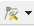, you can also decide whether to enable vertex editing on the active layer or on all layers.
 After turning the Vertex Tool on you can see a red (or other color if you cahnged it)
when you hover over the layer's lines (edges) and points (vertices),
This means you can edit them now, it should look something like this:
After turning the Vertex Tool on you can see a red (or other color if you cahnged it)
when you hover over the layer's lines (edges) and points (vertices),
This means you can edit them now, it should look something like this:
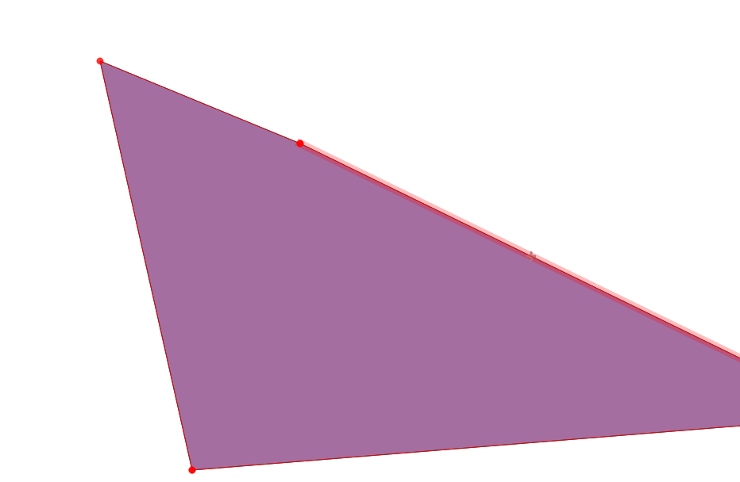
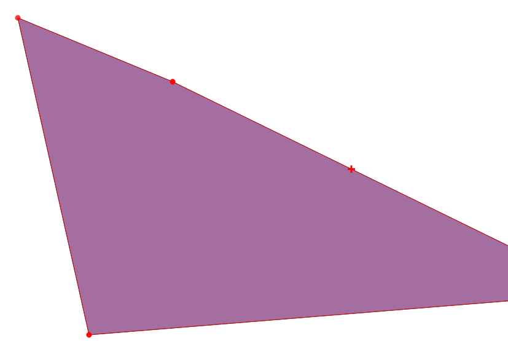
Notice that if you hover over the + sign in the middle of an edge it will allow you to create another vertex,
If you want to move an entire edge, click (don't drag) it anywhere except the vertices.
To change the position of an edge or vertex, click it once and then click the location where you want to move it to.
A thin red line will show you the shape after the edit.
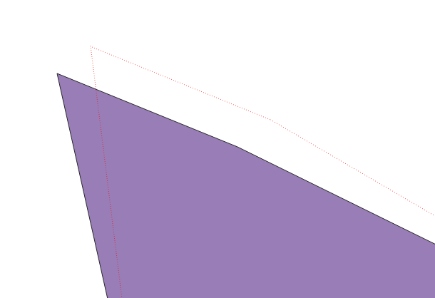
If you moving point data, the process is simmiliar, except that you moving the entire geometry.
And thats it, Simple and easy to use, and now you know how to do that in Open Source.
Go back to the table of contents
Copy, Paste And Delete
Just like text in a document you can Copy, Paste and Delete features from a layer, and paste them into another layer.
Copying is done easily, you first have to select the features you want to copy, with any selection method you want,
and the either press Ctrl+C or use the Copy Features button  .
.
Pasting must be done to an editable layer, meaning that youtoggled editing on.
Pasting can be done with either press Ctrl+V or use the Paste Features button  .
.
Deleting specific features needs to be done on an editable layer, after selecting the features you want to delete,
either press Delete or use the Delete Features button  .
.
Go back to the table of contents